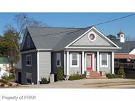

908 Hay Street — Haymount — Broker Price Opinion

A 2005-built, 1.5-story building on a 0.27-acre lot on Hay Street in Haymount, zoned OI (Office & Institutional). It has about 3,696 SF of heated and cooled space on two floors. The owner reports it is fully renovated and in very good condition. The block sits between two major cultural projects: the new $87 million NC History Center on the Civil War, Emancipation & Reconstruction, about 0.1 mile away across Hay St, and the Cape Fear Regional Theatre, about a quarter mile west, which is finishing a $25 million expansion with a rooftop restaurant.
The value is about $162 per SF across 3,696 SF of heated and cooled space. OI zoning allows a residence on an upper floor over a ground-floor office by right; see the zoning section. This is a broker's opinion of value for marketing purposes, not a certified USPAP appraisal.
Subject property summary
Sources: Cumberland County property record, county building card, Cumberland County GIS parcels, Martindale directory.
Zoning — residence plus commercial
Yes. The City of Fayetteville's use table permits an upper-story dwelling, a live/work unit, multi-family and professional offices in OI by right, with no special use permit. How the floors are arranged decides which category applies.
| Configuration | UDO category | Status in OI |
|---|---|---|
| Office on the main (street-level) floor, apartment in the upper half-story | Dwelling, upper story: a dwelling on the second floor or higher, with nonresidential use on the ground or street level | Permitted by right |
| Owner lives on one floor and runs a business on another | Dwelling/unit, live/work: a dwelling with integrated work space used mainly by a resident | Permitted by right. The work area must meet the nonresidential building code; no drive-throughs; mixed-use parking and landscaping standards apply. OI has no minimum residential share. |
| Apartment on the main floor, unrelated office in the lower level | Not an "upper story" dwelling unless the lower level counts as street level | Likely workable, but get a written zoning determination |
| Whole building used as one residence | Dwelling, single-family detached | Permitted today, but a pending 2026 amendment would remove it; see note |
OI dimensional standards allow up to 24 dwelling units per acre for mixed use, with a 10,000 SF minimum lot. The 0.27-acre lot (about 11,760 SF) meets the minimum, and density is not a constraint. Combining a residence and an office in one building is a change of occupancy. Expect building permits, fire separation between the residential and business areas, and accessibility work for the office portion. In 2026 the city proposed UDO text amendment File 26-0379, which would remove single-family detached dwellings from OI; it went to a City Council public hearing on 6/22/2026. Its outcome was not confirmed, and it does not affect upper-story or live/work units. Hay St is part of the Haymount historic district. Whether this parcel is inside the city's local Historic/Landmark Overlay was not confirmed. If it is, exterior changes need a Certificate of Appropriateness. Sources: Fayetteville UDO use table 30-4.A.2, UDO 30-4.C.2 residential use standards, UDO definition: upper-story dwelling, OI district standards (Zoneomics), City of Fayetteville File 26-0379, City historic preservation.
Location catalysts
NC History Center on the Civil War
The $87 million, 60,000 SF state history center is under construction at the north end of Arsenal Park, about 0.1 mile from the subject. It will include 16,000 SF of exhibits, classrooms, an auditorium, a library and a café, and is scheduled to open in spring 2028. As of August 2026 the building was about 90% closed in, and a new parking lot is planned on Myrover St (CityView, NC History Center).
Cape Fear Regional Theatre
CFRT's $25 million "Act 2" expansion at 1209 Hay St, about a quarter mile west, doubles the building and adds classrooms and a rooftop bar and restaurant (BizFayetteville, CityView). The 60-seat restaurant, Brava, is scheduled to open in January 2027 with the new "1209 Stages" venue (Sunny 94.3). CFRT also paid $705,000 in 2022 for 1104 Hay St, nearby.
Both projects should raise foot traffic, evening activity and visibility along this part of Hay St. Neither is open yet, and no closed sale since they were announced shows a measurable premium. The value gives credit for location (no downward location adjustments for Hay St comps) but adds no speculative premium.
Methodology and verification basis
- Sales comparison (primary): 8 closed sales of small office and house-style buildings on Hay St and nearby Haymount streets, 2022–2024, all within about 0.3 mile. Comps are compared in $ per SF of building area, applied to the subject's 3,696 SF of conditioned space. Because about a third of that space is the lower level, there is a separate adjustment for it.
- Income cross-check: a market-rent capitalization using current Haymount office asking rents.
- Reference only: the county value, the subject's 2019 sale, and distressed or non-comparable sales nearby.
- All comps were independently researched from Cumberland County's recorded deeds and market-area sale records. Sale prices were checked against deed excise stamps.
- Adjustments are Grant-Murray Real Estate's professional judgment as prospective listing broker. This is a broker's opinion of value, not a certified USPAP appraisal.
Comparable sales — Haymount / Hay St
| Comp | Sold | Price | Bldg SF | $/SF | Acres | Built | Zoning | Distance |
|---|---|---|---|---|---|---|---|---|
| C1. 910 Hay St House-style office | 4/2023 | $310,000 | 1,680 | $184.52 | 0.16 | 1925 | OI | Next door |
| C2. 916 Hay St House-style building | 12/2023 | $335,000 | 2,979 | $112.45 | 0.42 | 1848 / eff. 1970 | NC | 0.05 mi |
| C3. 1007 Arsenal Ave House-style building | 10/2024 | $405,000 | 3,222 | $125.70 | 0.34 | 1900 / eff. 1968 | OI | 0.16 mi |
| C4. 1014 Hay St Office building | 12/2023 | $650,000 | 4,312 | $150.74 | 0.58 | 1965 | OI | 0.13 mi |
| C5. 1019 Hay St Office building (renovated) | 8/2023 | $900,000 | 4,408 | $204.17 | 0.61 | 1900 / eff. 2000 | OI | 0.14 mi |
| C6. 1214 Morganton Rd Office building | 11/2023 | $450,000 | 2,189 | $205.57 | 0.14 | 1994 | NC | 0.27 mi |
| C7. 1008 Hay St Two-story office | 11/2022 | $460,000 | 3,347 | $137.44 | 0.33 | 1922 / eff. 1966 | OI | 0.09 mi |
| C8. 119 Broadfoot Ave House-style building | 6/2023 | $375,000 | 2,679 | $139.98 | 0.41 | 1900 / eff. 1965 | LC | 0.26 mi |
Building SF is the county's above-grade heated area. All sales are arm's-length warranty or special warranty deeds, with prices matching excise stamps. Left out: 713 Hay St (2/2026, $372,000, foreclosure trustee's deed to the lender); 911 Hay St (1/2025, $600,000 for a 7,466 SF medical building, about $80/SF and much larger); 1104 Hay St (11/2022, $705,000 to CFRT, an institutional assemblage); and 1017 Arsenal Ave (5/2023, $300,000, a residential-use house). Sources: Cumberland County market-area sales (VCS 8042) and county deed records for each comp.
Adjustment matrix
Each comp is adjusted to the subject: a 2005-built building of 3,696 SF, heated and cooled on two floors, fully renovated and in very good condition, with a carport on a 0.27-acre lot on Hay St. Time is adjusted at +2% per year.
| Comp property | Unadj. $/SF | Net Adj. % | What was adjusted | Adj. $/SF |
|---|---|---|---|---|
| C1. 910 Hay St | $184.52 | +19% | Location: next door, same block (0%). Time: about 3.5 years ago (+7%). Condition: 1925 house versus the subject's 2005 building, fully renovated and in very good condition (+25%). Size: much smaller building, which sells for more per SF (−10%). Site/parking: 0.16 ac versus 0.27 ac with carport (+5%). Lower level: about a third of the subject's area is the lower level, which buyers value below main-floor space (−8%). Use: both house-style offices (0%). | $219.58 |
| C2. 916 Hay St | $112.45 | +10% | Location: same block (0%). Time: about 2.8 years ago (+6%). Condition: 1848 house, effective 1970 (+20%). Size: smaller (−3%). Site: larger 0.42-ac lot (−5%). Lower level (−8%). Use: similar house-style building (0%). | $123.70 |
| C3. 1007 Arsenal Ave | $125.70 | +16% | Location: Arsenal Ave side street with less Hay St exposure (+5%). Time: about 2 years ago (+4%). Condition: 1900 house, effective 1968 (+20%). Size: slightly smaller (−2%). Site: slightly larger lot (−3%). Lower level (−8%). | $145.81 |
| C4. 1014 Hay St | $150.74 | +8% | Location: same Hay St corridor (0%). Time: about 2.8 years ago (+6%). Condition: 1965 office, heavily depreciated (+25%). Size: similar (0%). Site: 0.58 ac with more parking (−10%). Lower level (−8%). Use: purpose-built office (−5%). | $162.80 |
| C5. 1019 Hay St | $204.17 | −7% | Location: same corridor (0%). Time: about 3.2 years ago (+6%). Condition: renovated, effective 2000; the subject is newer and fully renovated (+10%). Size: similar (0%). Site: 0.61 ac (−10%). Lower level (−8%). Use: purpose-built office (−5%). | $189.88 |
| C6. 1214 Morganton Rd | $205.57 | 0% | Location: Haymount crossroads with stronger retail exposure (−5%). Time: about 3 years ago (+6%). Condition: 1994 construction (+15%). Size: smaller (−8%). Site: smaller 0.14-ac lot (+5%). Lower level (−8%). Use: purpose-built office (−5%). | $205.57 |
| C7. 1008 Hay St | $137.44 | +15% | Location: same block segment (0%). Time: about 3.9 years ago (+8%). Condition: 1922 building, effective 1966 (+25%). Size: slightly smaller (−2%). Site: similar lot with rear parking (−3%). Lower level (−8%). Use: two-story office with eight offices (−5%). | $158.05 |
| C8. 119 Broadfoot Ave | $139.98 | +10% | Location: Broadfoot Ave, Haymount (0%). Time: about 3.3 years ago (+7%). Condition: 1900 house, effective 1965 (+20%). Size: smaller (−4%). Site: larger lot (−5%). Lower level (−8%). Use: house-style building (0%). | $153.98 |
Adjusted range is $123.70–$219.58 per SF (mean $169.92, median $160.43). Weighted 20% to C5 (similar size, renovated), 15% each to C1 (next door), C4 (similar size) and C6 (newer construction), and 8.75% to each of the others, the indication is $177.05 per SF. Concluded rate: $165 per SF, set between the median and the weighted figure because the 3,696 SF is a working figure rather than a measured one. The −8% lower-level adjustment reflects that buyers typically pay less for lower-level space than for main-floor space.
Income cross-check
| Line item | Basis | Amount |
|---|---|---|
| Main and upper floors | ~2,416 SF × $19.00/SF gross | $45,904 |
| Lower level | ~1,280 SF × $13.00/SF gross | $16,640 |
| Potential gross income | About $16.92/SF blended | $62,544 |
| Vacancy and credit loss | 8% | −$5,004 |
| Operating expenses | 32% of effective income (taxes, insurance, utilities, repairs, management) | −$18,413 |
| Net operating income | $39,127 | |
| Capitalized value | 6.50%–7.00% cap rate | $559,000–$602,000 |
Rent evidence: a 2,400 SF second-floor OI office suite at 1003 Hay St (built 1987) asks $16.00/SF (LoopNet). New shell suites at 1304 Morganton Rd in Haymount ask $22.00/SF (LoopNet). These are asking rents, not signed leases. The subject's renovated main floor is priced between those two, and its lower level at a discount. Rates and expenses are broker estimates.
Value analysis & opinion of value
| Approach | Indication | Weight |
|---|---|---|
| Sales comparison: 3,696 SF × $165/SF | $609,840 | Primary |
| Income cross-check | $559,000–$602,000 | Support |
| County 2026 value | $376,892 | Reference only |
| 2019 sale of subject | $245,000 (9/2019) | Reference only |
The value is set at $600,000, between the sales comparison and the top of the income range. The range uses about $152–$173 per SF. Grant-Murray recommends listing at $629,000, about 5% above the value. That leaves room to test buyer interest from the museum and theater projects and the building's flexibility for mixed use.
Counter-evidence & upside
- Square footage drives the value. At $165/SF, every 250 SF changes the value by about $41,000. If a measured plan shows less than 3,696 SF of conditioned area, or the lower level is mostly below grade, the value moves toward the low end of the range.
- Below the value: the subject sold for $245,000 in 9/2019, and the county value is $376,892. The most recent nearby sales were weak: 713 Hay St went back to the lender in a $372,000 foreclosure (2/2026, about $97/SF), and 911 Hay St sold for about $80/SF (1/2025).
- Residential build. The building is vinyl-sided, and the county still grades it as average with 6 bedrooms and 5 baths. Buyers will want to see how the renovation is laid out for office use.
- Upside: newest building on the block. Built in 2005 and fully renovated, it is decades newer than nearly every Hay St comp. Most buyers here would face older systems.
- Upside: flexibility. By-right upper-story or live/work residential use appeals to owner-users who want to live and work in the same building. Because both floors are fully conditioned and renovated, a residence on one floor and an office on the other is practical without major work.
- Upside: timing. CFRT's restaurant opens in January 2027 and the history center in spring 2028. A sale closer to either opening may draw stronger interest.
Listing / commission terms
Sale listing
8% co-brokered — of the gross sale price when a cooperating broker procures the buyer, split under standard commercial co-brokerage practice.
6% in-house — when Grant-Murray Real Estate, LLC procures the buyer directly.
Offering approach
Market at $629,000 to owner-users (professional offices, medical and wellness practices, live/work buyers) and small investors. Feature the OI mixed-use flexibility and the nearby history center and theater. Before launch, get a measured floor plan, assemble renovation details and permits, and confirm the historic-overlay status.
Listing broker: Patrick Murray, CCIM, SIOR, Grant-Murray Real Estate, LLC. Final listing terms, duration and marketing-cost provisions will be set out in a separate written listing agreement.
Limitations
- Owner-reported facts. The report uses 3,696 SF of conditioned area as a working figure; the owner reports a full renovation and very good condition. These were not measured or inspected for this report.
- Lower level. The county lists a 1,280 SF finished basement. Its grade access and permitted use were not verified. A fully walk-out, permitted lower level would support the upper end of the range.
- Zoning. The by-right status of upper-story and live/work dwellings comes from the city's published UDO. A written zoning determination is recommended before marketing a specific mixed-use layout. The outcome of the 2026 OI amendment (File 26-0379) and the parcel's historic-overlay status were not confirmed.
- Comp data. Comp sizes, ages and prices come from Cumberland County records and deed stamps and were not confirmed with buyers or sellers. Interior condition at the time of sale is unknown.
- Rents and cap rates in the income cross-check are broker estimates based on asking rents.
- No title search, survey or environmental review was performed.
- This is a broker's opinion of value for marketing purposes, prepared by Grant-Murray Real Estate, LLC. It is not a certified USPAP appraisal.
Prepared by
Patrick Murray, CCIM, SIOR
Principal / Broker in Charge
Grant-Murray Real Estate, LLC
150 N. McPherson Church Rd
Fayetteville, NC 28303
O: 910.829.1617
patrick@grantmurrayre.com
grantmurrayre.com
Prepared for
Gardeavant Properties LLC
Owner of record
210 Woodside Ave
Fayetteville, NC 28301
This Broker Price Opinion (BPO) is prepared by Patrick Murray, CCIM, SIOR, of Grant-Murray Real Estate, LLC. It is not an appraisal and is not a certified valuation under USPAP. The conclusion uses the sales comparison approach on independently researched closed sales in the Haymount / Hay St market, cross-checked with a market-rent income approach and with (but not relying on) the county's assessed value. It relies on the owner's reported area and condition and is subject to verification of those facts, zoning status and changing market conditions.